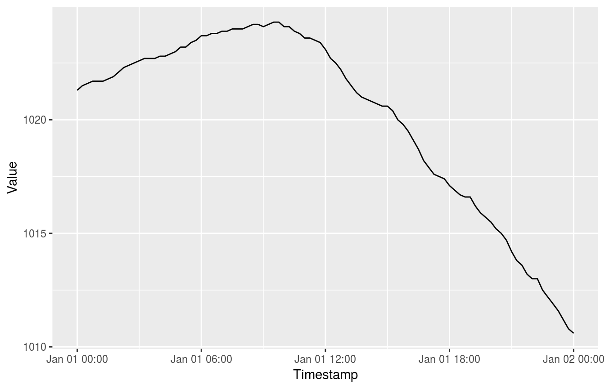
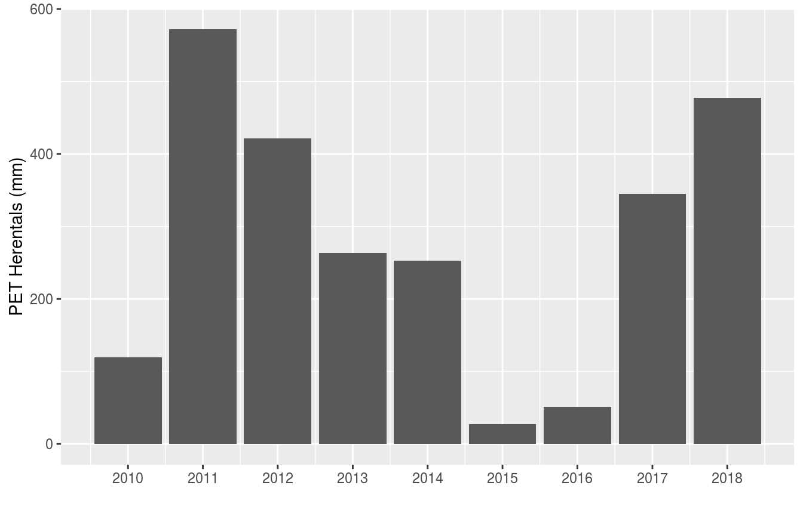
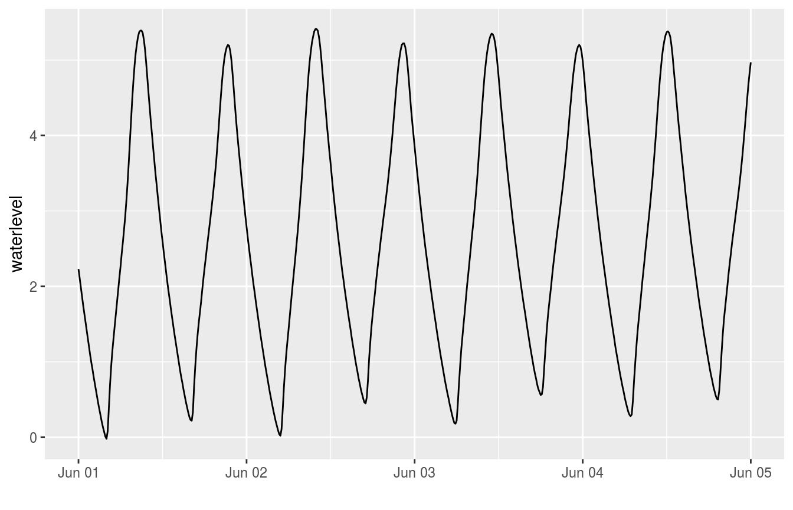
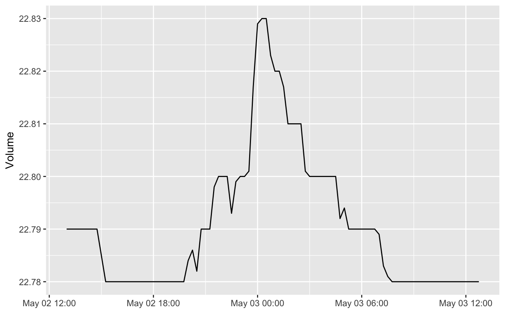
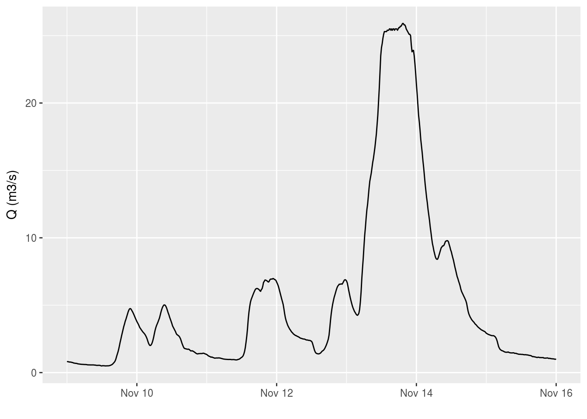

Download time series from Waterinfo.be
Stijn Van Hoey
2017-10-21
Introduction
The waterinfo.be API uses a system of identifiers, called ts_id to define individual time series. For example, the identifier ts_id = 78073042 corresponds to the time series of air pressure data for the measurement station in Liedekerke, with a 15 min time resolution. Hence, the ts_id identifier defines a variable of interest from a measurement station of interest with a specific frequency (e.g. 15 min, hourly,…). The knowledge of the proper identifier is essential to be able to download the corresponding data.
Downloading with known ts identifier
In case you already know the ts_id identifier that defines your time serie, the package provides the function get_timeseries_tsid to download a specific period of the time series.
As an example, to download the air pressure time series data of Liedekerke with a 15 min resolution (ts_id = 78073042) for the first of January 2016:
my_data <- get_timeseries_tsid("78073042", from = "2016-01-01", to = "2016-01-02")
knitr::kable(head(my_data), align = "lcc")| Timestamp | Value | Quality Code |
|---|---|---|
| 2016-01-01 00:00:00 | 1021.3 | 130 |
| 2016-01-01 00:15:00 | 1021.5 | 130 |
| 2016-01-01 00:30:00 | 1021.6 | 130 |
| 2016-01-01 00:45:00 | 1021.7 | 130 |
| 2016-01-01 01:00:00 | 1021.7 | 130 |
| 2016-01-01 01:15:00 | 1021.7 | 130 |
For more information on defining the period of the download, a separate vignette is available. Let’s have a visual check of our data, using the ggplot2 package:
ggplot(my_data, aes(Timestamp, Value)) +
geom_line()
As such, knowing the identifier is the most straightforward way of downloading a time series. In order to find these ts_id identifier, the package supports looking for identifiers based on a supported variable name (limited set of supported variables by VMM) or looking for identifiers by checking all variables for an individual station. These methods are explained in the next sections.
Search identifier based on variable name
For a number of variables, the documentation of the Waterinfo.be API provides a direct overview option of all available VMM measurement stations, using the so-called Timeseriesgroup_id. For these variables, the package provides the function get_stations to download an overview of available measurement stations and the related ts_id identifiers. The latter can be used to download the time series.
get_stations("air_pressure")## ts_id station_latitude station_longitude station_id station_no
## 1 78124042 51.20300 5.439589 12213 ME11_002
## 2 78039042 51.24379 4.266912 12208 ME04_001
## 3 78005042 51.02263 2.970584 12206 ME01_003
## 4 78107042 51.16224 4.845708 12212 ME10_011
## 5 78073042 50.88663 4.094898 12210 ME07_006
## 6 78022042 51.27226 3.728299 12207 ME03_017
## 7 78056042 50.86149 3.411318 12209 ME05_019
## 8 78090042 50.73795 5.141976 12211 ME09_012
## station_name stationparameter_name parametertype_name
## 1 Overpelt_ME Pa Pa
## 2 Melsele_ME Pa Pa
## 3 Zarren_ME Pa Pa
## 4 Herentals_ME Pa Pa
## 5 Liedekerke_ME BP Pa
## 6 Boekhoute_ME Pa Pa
## 7 Waregem_ME Pa Pa
## 8 Niel-bij-St.-Truiden_ME Pa Pa
## ts_unitsymbol dataprovider
## 1 hPa VMM
## 2 hPa VMM
## 3 hPa VMM
## 4 hPa VMM
## 5 hPa VMM
## 6 hPa VMM
## 7 hPa VMM
## 8 hPa VMMBy default, the expected frequency is the 15 min frequency of the time series. However, for some of the variables, multiple frequencies are supported by the API. The package provides a check on the supported variables and frequencies. An overview of the currently supported variables can be requested with the command supported_variables() (either in dutch, nl, or in english, en). Actually, more variables are available with the API (see next section), but for each of these variables the get_stations function is supported (i.e. the Timeseriesgroup_id is documented by VMM).
supported_variables("en") %>%
as.list()## $variable_en
## [1] "discharge" "soil_saturation"
## [3] "soil_moisture" "dew_point_temperature"
## [5] "ground_temperature" "ground_heat"
## [7] "irradiance" "air_pressure"
## [9] "air_temperature_175cm" "rainfall"
## [11] "relative_humidity" "evaporation_monteith"
## [13] "evaporation_penman" "water_velocity"
## [15] "water_level"To check which predefined frequencies are provided by the Waterinfo.be API for a given variable, the supported_frequencies function is available:
supported_frequencies(variable_name = "air_pressure")## [1] "15min"Hence, for air pressure data, only the 15 min resolution is supported. Compared to evaporation derived by the Monteith equation:
supported_frequencies(variable_name = "evaporation_monteith")## [1] "15min, day, month, year"multiple resolutions are available. Using the coarser time resolutions can be helpful when you want to download longer time series while keeping the number of records to download low (if the frequency would be sufficient for your analysis).
stations <- get_stations("evaporation_monteith", frequency = "year")
subset_of_columns <- stations %>% select(ts_id, station_no, station_name,
parametertype_name, ts_unitsymbol)
knitr::kable(subset_of_columns)| ts_id | station_no | station_name | parametertype_name | ts_unitsymbol |
|---|---|---|---|---|
| 94306042 | ME01_003 | Zarren_ME | PET | mm |
| 94512042 | ME09_012 | Niel-bij-St.-Truiden_ME | PET | mm |
| 94526042 | ME10_011 | Herentals_ME | PET | mm |
| 94540042 | ME11_002 | Overpelt_ME | PET | mm |
| 94456042 | ME03_017 | Boekhoute_ME | PET | mm |
| 94484042 | ME05_019 | Waregem_ME | PET | mm |
| 94470042 | ME04_001 | Melsele_ME | PET | mm |
| 94498042 | ME07_006 | Liedekerke_ME | PET | mm |
When interesed in the data of Herentals_ME, we can use the corresponding ts_id to download the time series of PET with a yearly frequency and make a plot with ggplot:
pet_yearly <- get_timeseries_tsid("94526042", period = "P10Y")
pet_yearly %>%
na.omit() %>%
ggplot(aes(Timestamp, Value)) +
geom_bar(stat = "identity") +
scale_x_datetime(date_labels = "%Y", date_breaks = "1 year") +
xlab("") + ylab("PET Herentals (mm)") (see the vignette on defining date periods for more information on the period argument used)
Remark: the get_stations function only works for those measurement stations belonging to the VMM meetnet (network), related to the so-called datasource = 1. For other networks, i.e. datasource = 2, the enlisting is not supported. Still, a search for data is provided starting from a given station name, as explained in the next section.
Search identifier based on station name
Apart from the option to check the measurement stations that can provide data for a given variable, the package provides the function get_variables to get an overview of the available variables for a given station, using the station_no. The advantage compared to the ts_id is that these station_no names are provided by the waterinfo.be website itself when exploring the data. When clicking on a measurement station on the map and checking the time series graph, the station_no is provided in the upper left corner in between brackets.

Waterinfo.be example printscreen of time series
So, for the example in the figure, i.e. station_no = zes42a-1066, the available time series are retrieved by using the get_variables command:
available_variables <- get_variables("zes42a-1066")## [1] "Use datasource: 2 for data requests of this station!"available_variables %>% select(ts_id, station_name, ts_name,
parametertype_name)## ts_id station_name ts_name
## 1 3066658 Sint-Amands tij/Zeeschelde zes42aSTAM.W_t6.HWLW.base
## 2 2810041 Sint-Amands tij/Zeeschelde zes42aSTAM.W_t6.1min.base
## 3 2810011 Sint-Amands tij/Zeeschelde zes42aSTAM.W_t6.10min.base
## 4 3066655 Sint-Amands tij/Zeeschelde zes42aSTAM.W_t6.LW.base
## 5 2809769 Sint-Amands tij/Zeeschelde zes42aSTAM.W_r
## 6 3066652 Sint-Amands tij/Zeeschelde zes42aSTAM.W_t6.HW.base
## 7 3047251 Sint-Amands tij/Zeeschelde zes42aSTAM.W_r.KK.HWLW.tpk
## parametertype_name
## 1 h
## 2 h
## 3 h
## 4 h
## 5 h
## 6 h
## 7 hThe available number of variables depends on the measurement station. The representation is not standardized and depends also from the type of meetnet. Nevertheless, one can derive the required ts_id from the list when interpreting the field names. Remark that the datasource can be 2 instead of 1 for specific meetnetten (networks). The datasource to use is printed when asking the variables for a station.
In order to download the 10 min time series water level data for the station in Sint-Amands tij/Zeeschelde, the ts_id = 2810011 can be used in the get_timeseries_tsid function, taking into account the datasource = 2 (default is 1):
tide_stamands <- get_timeseries_tsid("2810011",
from = "2017-06-01", to = "2017-06-05",
datasource = 2)
ggplot(tide_stamands, aes(Timestamp, Value)) +
geom_line() + xlab("") + ylab("waterlevel")
For some measurement stations, the number of variables can be high (lots of precalculated derivative values) and extracting the required time series identifier is not always straightforward. For example, the dat Etikhove/Schuif/Nederaalbeek (K06_OM225), provides the following number of variables:
available_variables <- get_variables("K06_OM225")## [1] "Use datasource: 1 for data requests of this station!"nrow(available_variables)## [1] 118As the measured variables at a small time resolution are of most interest, filtering on P.15 (or P.1, P.60,…) will help to identify measured time series, for those stations belonging to the meetnet of VMM (datasource = 1):
available_variables <- get_variables("K06_OM225")## [1] "Use datasource: 1 for data requests of this station!"available_variables %>%
filter(ts_name == "P.15")## station_name station_no ts_id ts_name
## 1 Etikhove/Schuif/Nederaalbeek K06_OM225 84094042 P.15
## 2 Etikhove/Schuif/Nederaalbeek K06_OM225 31882042 P.15
## 3 Etikhove/Schuif/Nederaalbeek K06_OM225 22322042 P.15
## 4 Etikhove/Schuif/Nederaalbeek K06_OM225 29156042 P.15
## 5 Etikhove/Schuif/Nederaalbeek K06_OM225 22302042 P.15
## parametertype_name stationparameter_name
## 1 Volume Wachtbekken Volume_wachtbekken
## 2 Hk Hschuif
## 3 H Hopw
## 4 H Hafw 100m afwaarts
## 5 H HafwLoading and visualizing the last day (period P1D) of available data for the water level 100m downstream (Hafw 100m afwaarts):
afw_etikhove <- get_timeseries_tsid("29156042",
period = "P1D",
datasource = 1) # 1 is default
ggplot(afw_etikhove, aes(Timestamp, Value)) +
geom_line() + xlab("") + ylab("Volume")
We can do similar filtering to check for time series on other stations, for example the Molenbeek in Etikhove:
available_variables <- get_variables("LS06_347")## [1] "Use datasource: 1 for data requests of this station!"available_variables %>%
filter(ts_name == "P.15")## station_name station_no ts_id ts_name parametertype_name
## 1 Etikhove/Molenbeek LS06_347 63483042 P.15 H
## 2 Etikhove/Molenbeek LS06_347 96428042 P.15 Sed.vracht
## 3 Etikhove/Molenbeek LS06_347 27648042 P.15 T
## 4 Etikhove/Molenbeek LS06_347 60850042 P.15 Sed.conc
## 5 Etikhove/Molenbeek LS06_347 66411042 P.15 Sed.Q
## 6 Etikhove/Molenbeek LS06_347 38635042 P.15 v
## 7 Etikhove/Molenbeek LS06_347 70346042 P.15 Q
## stationparameter_name
## 1 H
## 2 Sed.vracht
## 3 T
## 4 Sed.conc
## 5 Sed.Q
## 6 v
## 7 QAnd use the ts_id code representing discharge to create a plot of the discharge during a storm in 2010:
etikhove <- get_timeseries_tsid("70346042",
from = "2010-11-09", to = "2010-11-16")
ggplot(etikhove, aes(Timestamp, Value)) +
geom_line() + xlab("") + ylab("Q (m3/s)")